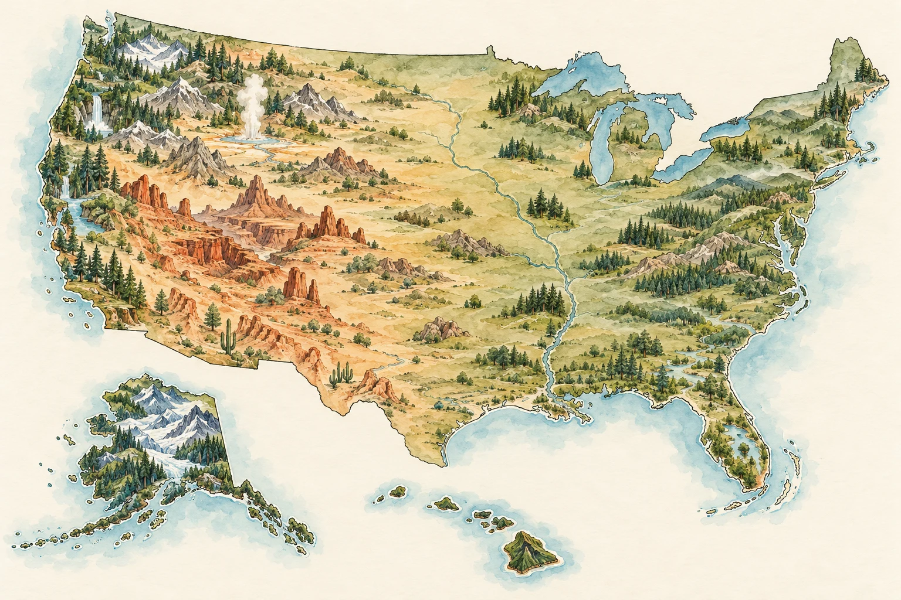

SHENG SHENG EXPEDITIONS
走進風景，讓好奇心繼續旅行。
從親身走過的路出發，分享景點故事、交通銜接與可照著安排的旅程。選一個主題，開始下一段探索。

CHOOSE YOUR NEXT CHAPTER
國家公園是探險的一個起點；自然景觀與旅行配套，也各有自己的入口。
THEME 01
八座公園，三條區域路線。從地圖選目的地，閱讀地景形成、短步道、遊客中心與逐日行程。
8 座公園 · 中英文 · 地區分類
THEME 02
走到國家公園之外，看羚羊谷的光影、馬蹄灣的河曲，以及 Matanuska 冰川與周邊步道。
峽谷 · 河流 · 冰川
THEME 03
把旅程接起來：Anchorage 城市安排、火車與船班銜接，以及 SJC、LAS 機場貴賓室。
交通銜接 · 城市補給 · 機場